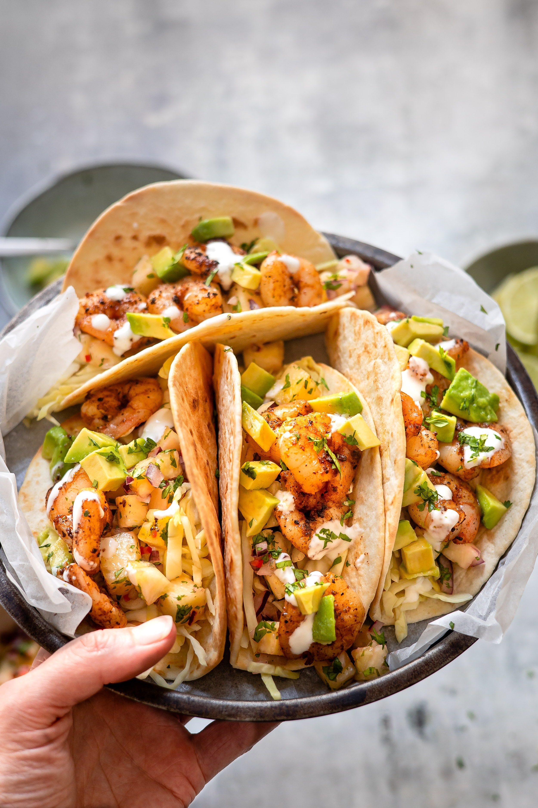

Tacos

Chicken Street Tacos
Here you get corn tortillas layered with charred and tender cilantro-lime chicken, topped with creamy avocados and cilantro. YUM!
Ingredients
These tacos require very few ingredients, and if you don't have something on hand feel free to substitute as needed.
- Boneless skinlees chicken breast
- Limes
- Olive oil
- Fresh Garlic
- Ground cumin
- Ancho chili powder
- Cilantro
- Avocado
- Salsa or Pico de gallo
- Diced tomatoes
- Shredded lettuce
- Shredded Cheese
Steps
- Make the chicken taco marinade by stirring together lime juice, olive oil, garlic, cumin chili powder, and cilantro.
- Pour marinade over chicken in a bag and marinate in the fridge for 1-6 hours.
- Cook on hot preheated grill, about 5 minutes per side.
- Let rest briefly, then dice into cubes.
- Layer into warmed tortillas and top as desired.